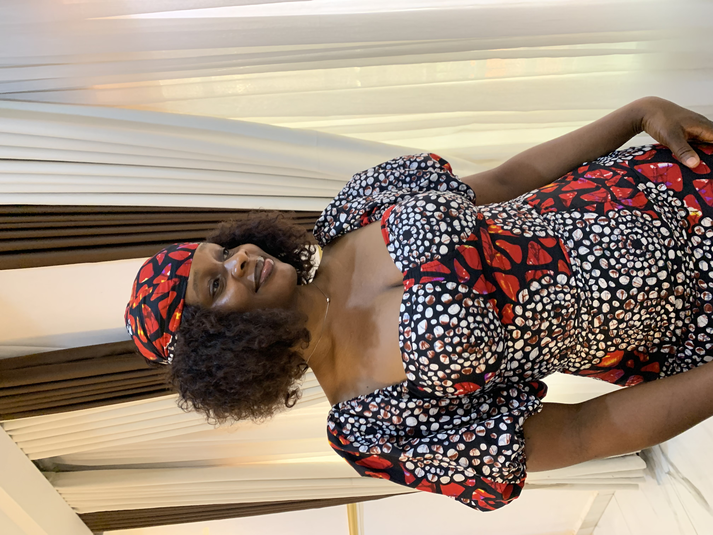

Hello, I'm
Chizoba Augustina
Frontend Developer
I build responsive, accessible and user-friendly websites using modern web technologies. I'm passionate about creating digital experiences that combine functionality with beautiful design.

Hello, I'm
I build responsive, accessible and user-friendly websites using modern web technologies. I'm passionate about creating digital experiences that combine functionality with beautiful design.

My journey into the tech world began with a deep curiosity about how websites and digital products are created. What started as a simple interest in technology quickly evolved into a passion for building solutions that can positively impact people's lives. The ability to transform ideas into functional and visually appealing experiences inspired me to pursue a career in web development.
As I learned HTML, CSS, Git, GitHub, Tailwind CSS, and modern development practices, I discovered that technology is more than just writing code—it's about solving real-world problems, creating opportunities, and continuously learning. Every project I build strengthens my skills and motivates me to keep improving as a developer.
My goal is to grow beyond frontend development and become a highly skilled software engineer capable of building innovative, scalable, and user-focused digital solutions. I am committed to continuous learning, embracing new technologies, collaborating with talented teams, and making a meaningful impact in the global tech industry.
Let's ConnectA collection of projects demonstrating my skills in web development, version control, modern CSS frameworks, and AI-assisted development workflows.
Built a structured and accessible website using semantic HTML. The project focused on creating clean page layouts, improving content organization, and ensuring a solid foundation for web development.
Designed a fully responsive website that adapts seamlessly to desktops, tablets, and mobile devices. The goal was to improve user experience through modern layouts and visual styling.
Implemented version control workflows using Git and GitHub. This project solved collaboration challenges by enabling efficient code management, branching, and team contributions.
Developed a modern landing page using Tailwind CSS. The project focused on rapid UI development, reusable utility classes, and responsive design without writing excessive custom CSS.
Leveraged AI-assisted coding techniques to accelerate development and improve productivity. The project explored how developers can transform ideas into functional applications more efficiently.
Applied structured prompting, planning, and AI collaboration techniques to engineer solutions from concept to implementation. The project focused on improving development workflows and problem-solving efficiency.